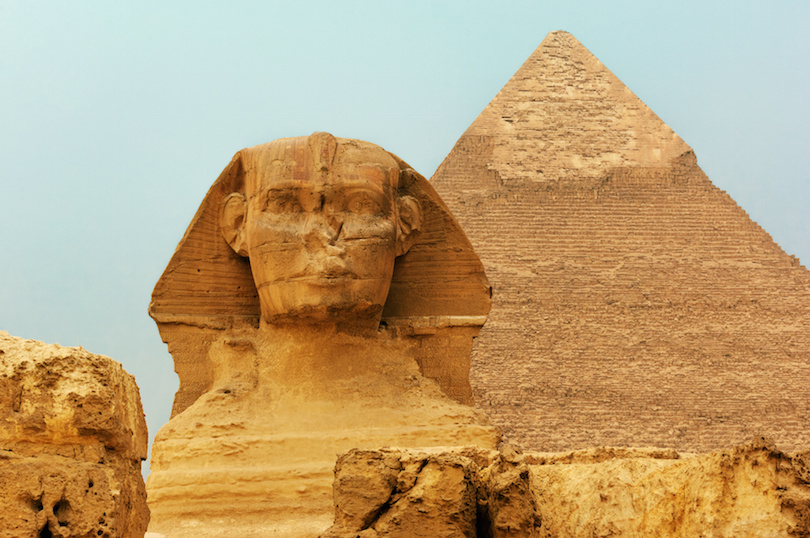

EGYPT
Country known for ancient monuments like the Pyramids of Giza, capital Cairo & Red Sea resorts.
Country known for ancient monuments like the Pyramids of Giza, capital Cairo & Red Sea resorts.
OFFICIAL NAME: Arab Republic of Egypt
FORM OF GOVERNMENT: Republic
CAPITAL: Cairo
POPULATION: 99,413,317
OFFICIAL LANGUAGE: Arabic
MONEY: Egyptian pound
AREA: 386,662 square miles (1,001,449 square kilometers)
The Great Sphinx of Giza is a limestone statue of a reclining sphinx, a mythical creature with the head of a human, and the body of a lion. Facing directly from west to east, it stands on the Giza Plateau on the west bank of the Nile in Giza, Egypt. The face of the Sphinx appears to represent the pharaoh Khafre. The original shape of the Sphinx was cut from the bedrock, and has since been restored with layers of limestone blocks. It measures 73 m long from paw to tail, 20 m high from the base to the top of the head and 19 m wide at its rear haunches. Its nose was broken off for unknown reasons between the 3rd and 10th centuries AD. The Sphinx is the oldest known monumental sculpture in Egypt and one of the most recognisable statues in the world. The archaeological evidence suggests that it was created by ancient Egyptians of the Old Kingdom during the reign of Khafre
The Giza pyramid complex, also called the Giza necropolis, is the site on the Giza Plateau in Greater Cairo, Egypt that includes the Great Pyramid of Giza, the Pyramid of Khafre, and the Pyramid of Menkaure, along with their associated pyramid complexes and the Great Sphinx of Giza. All were built during the Fourth Dynasty of the Old Kingdom of Ancient Egypt, between 2600 and 2500 BC. The site also includes several cemeteries and the remains of a workers' village. The site is at the edges of the Western Desert, approximately 9 kilometres west of the Nile River in the city of Giza, and about 13 kilometres southwest of the city centre of Cairo. Along with nearby Memphis, the site was inscribed on the UNESCO World Heritage List in 1979. The Great Pyramid and the Pyramid of Khafre are the largest pyramids built in ancient Egypt, and they have historically been common as emblems of Ancient Egypt in the Western imagination. They were popularised in Hellenistic times, when the Great Pyramid was listed by Antipater of Sidon as one of the Seven Wonders of the World. It is by far the oldest of the Ancient Wonders and the only one still in existence.
Abu Simbel is a historic site comprising two massive rock-cut temples in the village of Abu Simbel, Aswan Governorate, Upper Egypt, near the border with Sudan. It is situated on the western bank of Lake Nasser, about 230 km southwest of Aswan. The complex is part of the UNESCO World Heritage Site known as the "Nubian Monuments", which run from Abu Simbel downriver to Philae, and include Amada, Wadi es-Sebua, and other Nubian sites. The twin temples were originally carved out of the mountainside in the 13th century BC, during the 19th Dynasty reign of the Pharaoh Ramesses II. They serve as a lasting monument to the king Ramesses II. His wife Nefertari and children can be seen in smaller figures by his feet, considered to be of lesser importance and were not given the same position of scale. This commemorates his victory at the Battle of Kadesh. Their huge external rock relief figures have become iconic.
The Luxor Temple is a large Ancient Egyptian temple complex located on the east bank of the Nile River in the city today known as Luxor and was constructed approximately 1400 BCE. In the Egyptian language it was known as ipet resyt, "the southern sanctuary". It was one of the two primary temples on the east bank, the other being Karnak. Unlike the other temples in Thebes, Luxor temple is not dedicated to a cult god or a deified version of the pharaoh in death. Instead, Luxor temple is dedicated to the rejuvenation of kingship; it may have been where many of the pharaohs of Egypt were crowned in reality or conceptually. To the rear of the temple are chapels built by Amenhotep III of the 18th Dynasty, and Alexander. Other parts of the temple were built by Tutankhamun and Ramesses II. During the Roman era, the temple and its surroundings were a legionary fortress and the home of the Roman government in the area. During the Roman period a chapel inside the Luxor Temple originally dedicated to the goddess Mut was transformed into a Tetrarchy cult chapel and later into a church.